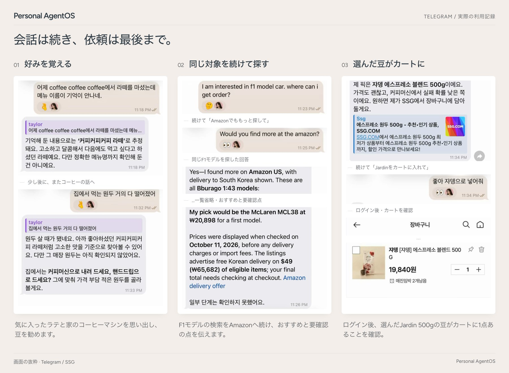

AI を替えても、アシスタントはそのまま。
ChatGPT のプランで使う Codex、または Claude のプランで使う Claude Code が仕事をします。会話の途中でもコマンド一つで替えられ、Still はそのまま続けます。
いつでも替えられるもの
- Codex
- Claude Code
- API キー
- Ollama
- ツールと接続
あなたのもとに残るもの
- あなたについて知ったこと
- やりかけの仕事
- あなたが任せた権限
- 実際に実行された記録
説明し直すことを、少なく。
記憶、会話、自分で選んだツールをつなぎます。
多くを語らなくても、覚えています。
先週話したことが、必要なときに戻ってきます。それぞれの記憶が何にもとづくかも伝えます。保存したことは、どれも取り消せます。
会話の例
月曜日
最近、猫がごはんをあまり食べない。どうしたらいい？
まず試してみたいことがいくつかあります…猫を飼っていることを覚えておきますね。
木曜日
5万円以下のロボット掃除機を選んで。
5万円以下で3台あります。猫の毛にいちばん強いものを最初に置きました。
実際の画面を開く

いつも話している場所で。いつも使っているものと。
話せる場所
- Telegram
- Slack
- ターミナル
- Mattermost
- ブラウザー
一緒に使えるもの
- あなたのフォルダー
- Gmail
- Google カレンダー
- Google ドライブ
- ログインしているサイト
フォルダーは、特に言わない限り読み取り専用です。Gmail の整理は別の権限で、Still がメールを送ることはありません。
話す間も働き、あなたが決めたところで止まる。
長い作業の前に、計画とどの AI が担当するかを伝えます。その間に別のことを聞いても、途中で直してもかまいません。
会話の例
母の誕生日プレゼントを5千円以下で探して。
Codex毎日使えそうなものを探して、レビューと配達日を確かめてから、3つお見せします。
「ありがとう」って英語でなんて言う？
Thank you です。プレゼント探しはまだ続いています。
- 接続したものだけ。 選んだフォルダー・アカウント・ツールだけを使います。
- 支払いはあなたを待ちます。 カートに入れることと支払うことは別の操作で、すべての支払いにあなたの承認が必要です。
- 秘密は外に。 パスワードやトークンは、プロンプト、ログ、実行記録に入りません。
今夜、Still を迎えましょう
Mac、Linux、Windows（WSL2）のコンピューターと、いま使っている ChatGPT か Claude のサブスクリプションがあれば十分です。
curl -LsSf https://raw.githubusercontent.com/Jongtae/Still/ebf97d4150be3eb867649a31e79287f05db02886/scripts/install.sh | shインストールスクリプトはアドレスでバージョンが固定されています。実行する前にスクリプトの内容を確認してください。Apple シリコンの Mac で Homebrew を使うなら brew tap jongtae/still https://github.com/Jongtae/Still、brew install jongtae/still/agentos のあと agentos start で起動します。Windows では PowerShell で wsl --install を実行して再起動し、Ubuntu を開いてそこにコマンドを貼り付けてください。
-
AI を選ぶ
セットアップはターミナルで進みます。Codex、Claude Code、API キーから選びます。すでにログインしているものは最初から選ばれています。Still はそのログイン情報を見ません。
-
あいさつする
そのままターミナルで、または
127.0.0.1:8787の Still の画面で話しかけてください。 -
スマートフォンでも
「Telegram をつないで」と言い、@BotFather から受け取ったトークンを貼り付けて、ペアリングリンクで「開始」を押します。
お好みで、トークの背景も Still の雰囲気に。壁紙（Still の姿または無地）を使うなら、Telegram のトーク画面でメニューを開き、壁紙を変更を選んで写真から選んでください。


そのほかはクイックスタートガイド（英語）にあります。
Engineering — この設計を選ぶ理由
技術思想、Ontology & Context、Decision Model、Presence、モデル独立性、Owner Authority、Research & Evidence。実装、証拠、残る設計課題を原文につなぎます。
コードも、作る過程も開かれています。
Still は AGPL-3.0 のオープンソースです。いまできることとまだ荒削りなところは製品の現状（英語）にまとめています。現在のバージョンは v0.3.0 です。
使ってみて気に入ったら、GitHub で Star を押してください。次の人が Still を見つける手助けになります。